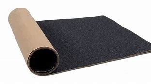

Las partes de los skates

La lija
Lija (griptape)
La lija se coloca sobre la superficie de la tabla del Skateboard para conseguir la adherencia de nuestros pies a la tabla y conseguir con éxito los diferentes trucos que realicemos. Podemos encontrar varias marcas que las fabrican y diferentes precios como son Grizzly, Diamond, Enjoi, Zero, DGK, Element o Sweet. En las tiendas de Skateboard las encontraréis, donde seguramente os las pongan según compréis vuestra tabla, aunque si queréis saber más y ponerla vosotros mismos podéis miraros este artículo de cómo poner la lija.
·Las partes del skate
·La tabla
·Los rodamientos
·Las ruedas
·Los ejes